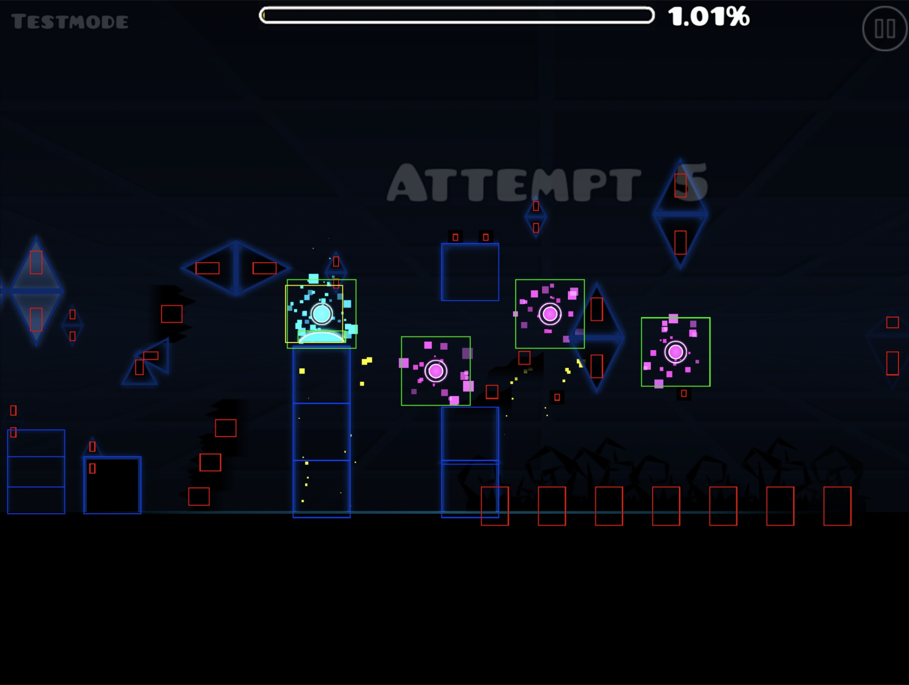
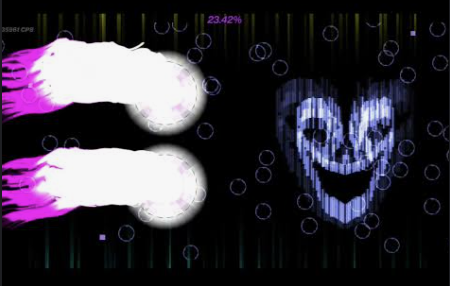

Why the RPPLL? The RPPLL is geniune gameplay that looks like a real level if it was omeganerfed. I know this is the Restricted PHYSICALLY possible levels list but at that point its not genuine gameplay. Rules: 10000 CPS max. 103485 TPS max. Examples: Empty child non luck based and the nevh blah blah blah blah frame perfect. PPLLLife without the spam 4,327,749 CPS for 2.761*10^17372 seconds. I'm still learing how to make web so there is only HTML, soon CSS and even later JS. If there is random updates then it's me making a new version. For now, it's a still page.


People who contributed